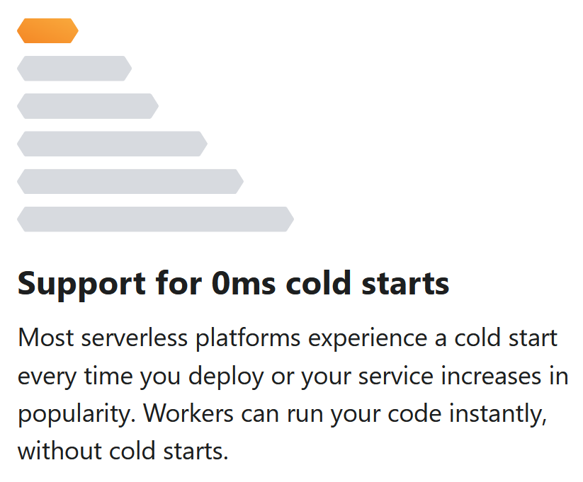

A serverless execution environment at the edge
Serverless:
addEventListener("fetch", event => {
event.respondWith(handleRequest(event.request))
})
async function handleRequest(request) {
return new Response("Hello world")
}Azure Functions only deploys to one datacenter at a time
Neugelb's Christmas project backend runs on Azure Functions and sometimes takes 10s to respond
How can Cloudflare claim 0ms cold starts?

var http = require('http');
var url = require('url');
var fs = require('fs');
var http = require('http');
import { parse } from "cookie""A change to the Workers Runtime must never break an application that is live in production."
Developers may now opt into backwards-incompatible fixes by setting a compatibility date.
# wrangler.toml
compatibility_date = "2021-09-20"
How does the Worker Runtime implement compatibility dates?
if (compatibility_date < "2021-09-20") {
// run old behavior
} else {
// run new behavior
}
Workers are given 30s to complete any requests
Generous free plan
addEventListener("fetch", event => {
event.respondWith(handleRequest(event.request))
})
async function handleRequest(request) {
const value = await NAMESPACE.get("first-key")
if (value === null) {
return new Response("Value not found", {status: 404})
}
return new Response(value)
}Perfect use case:
Real-time collaborative document editing